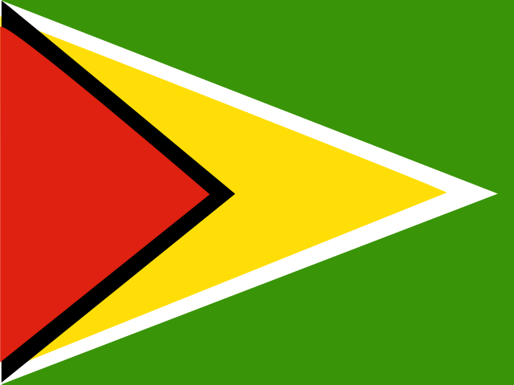

NBA players born in 1982
65 NBA and BAA players were born in 1982.
Players
65
born in 1982
Living
61
93.8%
Deceased
4
6.2%
Status unknown
0
0.0%
Most accomplished
Everyone born in 1982
65 players
| Jan. 6, 1982 | Living | 44 | 2001-02 to 2011-12 | ||
| Jan. 9, 1982 | Washington, D.C. | Living | 44 | 2005-06 | |
| Jan. 11, 1982 | Chicago, Illinois | Living | 44 | 2004-05 to 2017-18 | |
| Jan. 16, 1982 | Jackson, Mississippi | Died Oct. 20, 2017 | died at 35 | 2004-05 to 2006-07 | |
| Jan. 17, 1982 | Chicago, Illinois | Living | 44 | 2003-04 to 2018-19 | |
| Jan. 28, 1982 | Brooklyn, New York | Living | 44 | 2003-04 to 2004-05 | |
| Jan. 30, 1982 | Dakar, Senegal | Living | 44 | 2001-02 to 2012-13 | |
| Feb. 4, 1982 | Gainesville, Florida | Living | 44 | 2005-06 to 2010-11 | |
| Feb. 7, 1982 | Les Abymes, France | Living | 44 | 2003-04 to 2012-13 | |
| Feb. 9, 1982 | Chester, Pennsylvania | Living | 44 | 2004-05 to 2017-18 | |
 Rawle Marshall | Feb. 20, 1982 | Georgetown, Guyana | Living | 44 | 2005-06 to 2006-07 |
| Feb. 21, 1982 | The Bronx, New York | Living | 44 | 2004-05 to 2007-08 | |
| March 1, 1982 | Fond du Lac, Wisconsin | Living | 44 | 2005-06 to 2009-10 | |
| March 10, 1982 | Chicago, Illinois | Living | 44 | 2001-02 to 2012-13 | |
| March 22, 1982 | Wau, South Sudan | Living | 44 | 2005-06 | |
| April 1, 1982 | Cincinnati, Ohio | Living | 44 | 2004-05 | |
| April 8, 1982 | Mitchell, South Dakota | Living | 44 | 2004-05 to 2006-07 | |
| April 16, 1982 | Cormeilles-en-Parisis, France | Living | 44 | 2003-04 to 2016-17 | |
| April 16, 1982 | Benton Harbor, Michigan | Living | 44 | 2005-06 | |
| April 26, 1982 | Missouri City, Texas | Living | 44 | 2006-07 | |
| April 28, 1982 | Grand Rapids, Michigan | Living | 44 | 2003-04 to 2015-16 | |
| May 7, 1982 | Chicago, Illinois | Living | 44 | 2006-07 | |
| May 17, 1982 | Bruges, Belgium | Living | 44 | 2001-02 to 2018-19 | |
| May 30, 1982 | Philadelphia, Pennsylvania | Died Aug. 17, 2007 | died at 25 | 2001-02 to 2006-07 | |
| June 11, 1982 | Wilmington, Delaware | Living | 44 | 2005-06 to 2010-11 | |
| June 11, 1982 | Wilmington, Delaware | Living | 44 | 2005-06 to 2010-11 | |
| July 5, 1982 | Celje, Slovenia | Living | 44 | 2004-05 to 2016-17 | |
| July 8, 1982 | Philadelphia, Pennsylvania | Living | 44 | 2005-06 to 2012-13 | |
| July 23, 1982 | Sylacauga, Alabama | Living | 44 | 2001-02 to 2014-15 | |
| July 26, 1982 | Washington, D.C. | Living | 44 | 2005-06 to 2006-07 | |
| July 29, 1982 | Skopje, North Macedonia | Living | 44 | 2013-14 to 2014-15 | |
| Aug. 3, 1982 | Kyiv, Ukraine | Living | 44 | 2004-05 to 2007-08 | |
| Aug. 7, 1982 | Larissa, Greece | Living | 44 | 2006-07 | |
| Aug. 9, 1982 | Montreal, Quebec | Living | 44 | 2007-08 to 2016-17 | |
| Aug. 12, 1982 | Columbus, Ohio | Living | 44 | 2005-06 | |
| Aug. 15, 1982 | Nashville, Tennessee | Living | 44 | 2004-05 to 2007-08 | |
| Aug. 27, 1982 | Dallas, Texas | Died Sept. 23, 2019 | died at 37 | 2004-05 to 2011-12 | |
| Aug. 29, 1982 | Santa Fe, Argentina | Living | 44 | 2004-05 to 2012-13 | |
| Aug. 29, 1982 | Paris, France | Living | 44 | 2006-07 to 2009-10 | |
| Aug. 31, 1982 | Mamou, Louisiana | Living | 44 | 2004-05 to 2012-13 | |
| Sept. 1, 1982 | Waterbury, Connecticut | Living | 44 | 2005-06 to 2013-14 | |
| Sept. 3, 1982 | Raleigh, North Carolina | Living | 44 | 2002-03 to 2012-13 | |
| Sept. 12, 1982 | Mostar, Bosnia and Herzegovina | Living | 44 | 2003-04 to 2005-06 | |
| Sept. 13, 1982 | São Carlos, Brazil | Living | 44 | 2002-03 to 2018-19 | |
| Sept. 28, 1982 | Santa Teresa, Brazil | Living | 44 | 2004-05 to 2020-21 | |
| Sept. 28, 1982 | Houston, Texas | Living | 44 | 2004-05 to 2017-18 | |
| Oct. 2, 1982 | Hanford, California | Living | 44 | 2001-02 to 2019-20 | |
| Oct. 6, 1982 | Pontiac, Michigan | Living | 44 | 2011-12 | |
| Oct. 11, 1982 | Portland, Oregon | Living | 43 | 2005-06 to 2007-08 | |
| Oct. 16, 1982 | Minneapolis, Minnesota | Living | 43 | 2005-06 to 2016-17 | |
| Oct. 20, 1982 | Houston, Texas | Living | 43 | 2005-06 to 2006-07 | |
| Oct. 21, 1982 | Washington, D.C. | Living | 43 | 2006-07 to 2012-13 | |
| Oct. 25, 1982 | Columbus, Ohio | Living | 43 | 2005-06 | |
| Oct. 25, 1982 | Washington, D.C. | Died Sept. 17, 2026 | died at 43 | 2003-04 to 2006-07 | |
| Nov. 16, 1982 | Lake Wales, Florida | Living | 43 | 2002-03 to 2015-16 | |
| Nov. 21, 1982 | Washington, D.C. | Living | 43 | 2005-06 to 2016-17 | |
| Nov. 26, 1982 | Chicago, Illinois | Living | 43 | 2005-06 to 2010-11 | |
| Nov. 28, 1982 | São Paulo, Brazil | Living | 43 | 2003-04 to 2016-17 | |
| Dec. 2, 1982 | Holland, Pennsylvania | Living | 43 | 2005-06 | |
| Dec. 5, 1982 | Harvey, Illinois | Living | 43 | 2001-02 to 2012-13 | |
| Dec. 7, 1982 | Ventura, California | Living | 43 | 2006-07 to 2015-16 | |
| Dec. 8, 1982 | Portland, Oregon | Living | 43 | 2006-07 to 2012-13 | |
| Dec. 17, 1982 | Port-Gentil, Gabon | Living | 43 | 2007-08 | |
| Dec. 19, 1982 | Jackson, Mississippi | Living | 43 | 2003-04 to 2015-16 | |
| Dec. 31, 1982 | Living | 43 | 2005-06 to 2006-07 |
★3 = number of NBA All-Star selections · HOF = Naismith Basketball Hall of Fame